Hà Nội là một trong những khu du lịch nổi tiếng ở nước ta mang nhiều phong tục tập quán của dân tộc ta để lại và là Thủ Đô lớn trong nước Việt Nam.
Hà Nội đã sớm trở thành một trung tâm chính trị, kinh tế và văn hóa ngay từ những buổi đầu của lịch sử Việt Nam.
Với vai trò thủ đô, Hà Nội là nơi tập trung nhiều địa điểm văn hóa giải trí, công trình thể thao quan trọng của đất nước, đồng thời cũng là địa điểm được lựa chọn để tổ chức nhiều sự kiện chính trị và thể thao quốc tế.
Đây là nơi tập trung nhiều làng nghề truyền thống, đồng thời cũng là một trong ba vùng tập trung nhiều hội lễ của miền Bắc Việt Nam.
Nền ẩm thực Hà Nội với nhiều nét riêng biệt cũng là một trong những yếu tố thu hút khách du lịch tới thành phố.
Trong nội ô, cùng với các công trình kiến trúc, Hà Nội còn sở hữu một hệ thống bảo tàng đa dạng bậc nhất Việt Nam.
Thành phố cũng có nhiều lợi thế trong việc giới thiệu văn hóa Việt Nam với du khách nước ngoài thông qua các nhà hát sân khấu dân gian, các làng nghề truyền thống.
Du lịch Hà Nội đang ngày càng trở nên hấp dẫn hơn với các du khách. Những địa điểm du lịch như : Hồ Tây,...
Tính đến thời điểm nay Hà Nội được xem là một trong những du lịch nổi tiếng ở nước ta - những ai chưa đi qua thì đừng ngại ngùng book vé ngay tại HEAVY nhé.
Hồ Tây
2. Vịnh Hạ Long - Vẻ Đẹp Kỳ Quan Thiên Nhiên Thế giới
Vịnh Hạ Long là một vịnh nhỏ thuộc phần bờ tây vịnh Bắc Bộ tại khu vực biển Đông Bắc Việt Nam, bao gồm vùng biển đảo của thành phố Hạ Long thuộc tỉnh Quảng Ninh.
Là trung tâm của một khu vực rộng lớn có những yếu tố ít nhiều tương đồng về địa chất, địa mạo, cảnh quan, khí hậu và văn hóa.
Sự kết hợp của môi trường, khí hậu, địa chất, địa mạo, đã khiến vịnh Hạ Long trở thành quần tụ của đa dạng sinh học bao gồm hệ sinh thái rừng kín thường xanh mưa ẩm nhiệt đới và hệ sinh thái biển và ven bờ với nhiều tiểu hệ sinh thái.
Các đảo trên vịnh Hạ Long có những hình thù riêng, không giống bất kỳ hòn đảo nào ven biển Việt Nam và không đảo nào giống đảo nào.
Có chỗ đảo quần tụ lại nhìn xa ngỡ chồng chất lên nhau, nhưng cũng có chỗ đảo đứng dọc ngang xen kẽ nhau, tạo thành tuyến chạy dài hàng chục kilômét như một bức tường thành.
Đó là một thế giới sinh linh ẩn hiện trong những hình hài bằng đá đã được huyền thoại hóa. Đảo thì giống khuôn mặt ai đó đang hướng về đất liền (hòn Đầu Người);
đảo thì giống như một con rồng đang bay lượn trên mặt nước (hòn Rồng);
đảo thì lại giống như một ông lão đang ngồi câu cá (hòn Lã Vọng);
phía xa là hai cánh buồm nâu đang rẽ sóng nước ra khơi (hòn Cánh Buồm);
rồi hai con gà đang âu yếm vờn nhau trên sóng nước (hòn Trống Mái).Những địa điểm du lịch như : Đảo Tuần Châu , ...
Chính vì những nơi hùng vì , những hòn đảo huyền ảo ấy đã giúp Vịnh Hạ Long ngày càng trở nên một trong những khu du lịch danh giá - rất đáng để mọi người có thể ủng hộ .
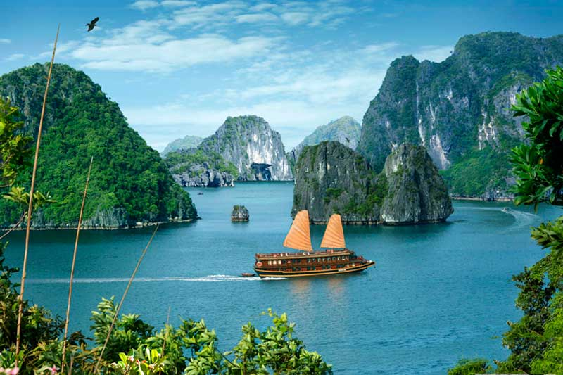
Đảo Tuần Châu
3.SaPa - Săn Mây Thành Phố Mờ Sương
SaPa là thị trấn được ra đời vào năm 1905, khi người Pháp phát hiện đây là địa điểm lý tưởng để xây dựng khu nghỉ mát và đã thực hiện.
Nằm ở phía Tây Bắc của Việt Nam, thị xã Sa Pa có độ cao trung bình khoảng 1.500 m – 1.800 m so với mực nước biển - chính vì thế nơi đây đã có nhiệt độ thấp , khí hậu lạnh quanh năm.
Sa Pa là một trong những địa điểm hiếm hoi có tuyết rơi tại Việt Nam. Lần tuyết rơi mạnh nhất vào ngày 13 tháng 2 năm 1968, liên tục từ 3 giờ sáng đến 14 giờ cùng ngày, dày tới 20 cm.
Vào thập niên 1940, người Pháp đã quy hoạch, xây dựng Sa Pa thành nơi nghỉ mát, điều dưỡng khá lý tưởng.
Ở đây có đầy đủ hệ thống thủy điện, trạm nước, dinh toàn quyền, toà chánh sứ, sở than, kho bạc, kiểm lâm, hệ thống đường nhựa và đặc biệt là hơn 200 biệt thự theo kiểu phương Tây ở ngay trung tâm thị trấn, nằm xen giữa những cánh rừng đào và những rặng samu.
Điều này làm cho phố núi thơ mộng này mang nhiều dáng dấp của một thành phố ở Châu Âu.
Sa Pa có nhiều cảnh đẹp tự nhiên như thác Bạc cao khoảng 200m, cầu Mây là một di tích lịch sử của người dân tộc, cổng Trời là điểm cao nhất mà đường bộ có thể đi tới để đứng ngắm đỉnh Fansipan, rừng Trúc, động Tả Phìn, bãi đá cổ Sa Pa nằm trong Thung lũng Mường Hoa.
Hàm Rồng là nơi trồng rất nhiều loại hoa, màu sắc sặc sỡ và được trồng theo từng khuôn viên. Ở nơi đây cũng có vườn lan với nhiều loại hoa quý hiếm.Những địa điểm nổi tiếng như : Cổng Trời SaPa,...
SaPa cũng thuộc địa danh thu hút khách du lịch nhiều nhất bởi những nơi có khí hậu lạnh lẽo cùng với những dãy núi hùng vĩ khiến ai cũng muốn chiêm ngưỡng - chờ đợi gì mà mình không thử một chuyến
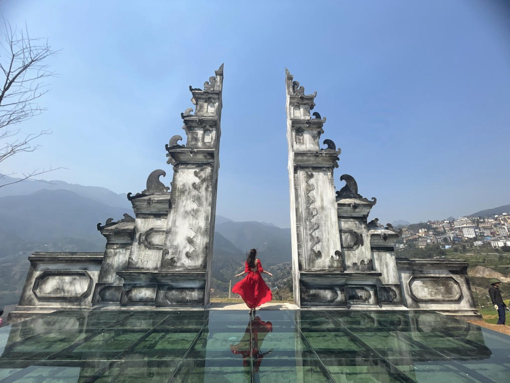
Cổng Trời SaPa
4.Ba Vì - Điểm Du Lịch Cuối Tuần Lý Tưởng
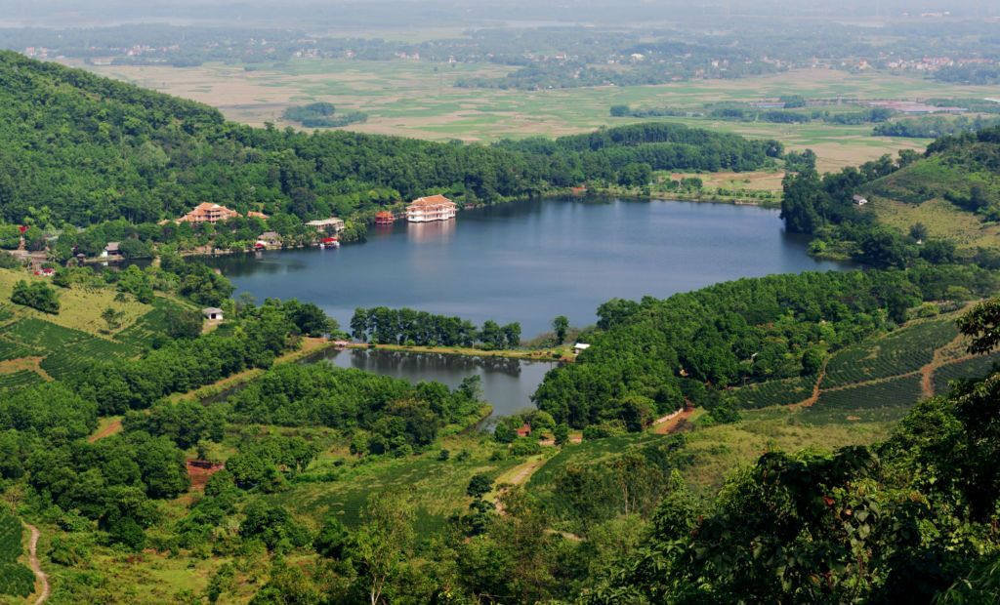
Ba Vì Ba Vì là huyện cực tây của Hà Nội, một phần ba diện tích tự nhiên phía nam của huyện là vùng núi cao của dãy núi Ba Vì.
Trung tâm huyện cách trung tâm Hà Nội 50 km về phía tây bắc.
Huyện Ba Vì là một huyện bán sơn địa với 7 xã miền núi thuộc vùng núi Ba Vì và 24 xã, thị trấn thuộc vùng đồng bằng.
Diện tích tự nhiên là 428,0 km², lớn nhất thủ đô Hà Nội.
Huyện có dãy núi Ba Vì, núi Ba Vì 3 phần 5 diện tích vùng núi thuộc huyện Ba Vì, cũng là nơi bảo tồn hệ động thực vật thuộc Vườn quốc gia Ba Vì.
Vùng (dãy) núi Ba Vì có nhiều ngọn núi nổi tiếng. Trong đó đỉnh Ba Vì (Tản Viên) cao 1281m, đỉnh Núi Vua cao 1296 m.
Dãy núi Ba Vì và nhiều danh thắng xung quanh đã tạo cho Ba Vì trở thành một huyện có giá trị và tiềm năng du lịch rất lớn đang khai thác và phát triển có hiệu quả.
Vườn quốc gia Ba Vì như một bảo tàng thiên nhiên của nước ta. Đây là một trong các vườn quốc gia lớn nhất nước ta tại miền Bắc.
Vườn quốc gia không bị khai thác và cải tạo hoàn toàn .Vẻ đẹp và sự hùng vĩ của thiên nhiên, thực vật, động vật vẫn được lưu giữ rất tốt. Đây là một khu rừng thiên nhiên dường như chìm trong huyền ảo của làn sương mù.
Với một số địa điểm tham quan như khu du lịch sinh thái Ba Vì Garden,...góp phần tạo nên những điều đặc trưng và thu hút du khách của vườn quốc gia.
Bà Vì tuy chỉ là một huyện thuộc thủ đô Hà Nội nhưng đây cũng được xem là một địa điểm du lịch và tham quan cho rất nhiều người - những người am hiểu và đam những cái đẹp.
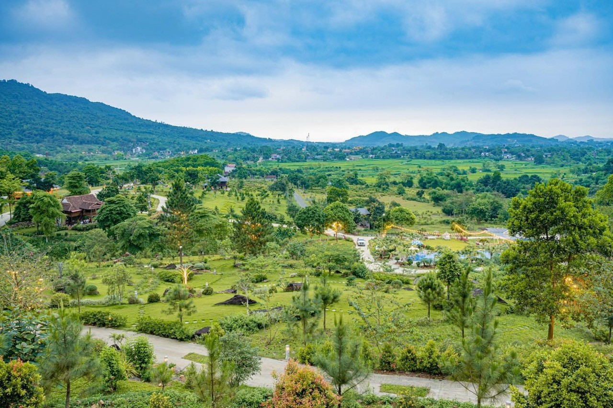
Khu Du Lịch Sinh Thái Ba Vì Garden
5.Tràng An Ninh Bình - Vẻ Đẹp Thiên Nhiên Hùng Vĩ
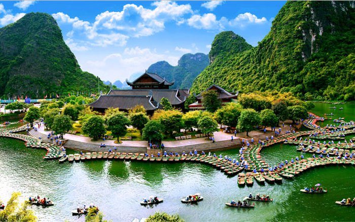
Tràng An là một vùng du lịch tổng hợp gồm các di sản văn hóa và thiên nhiên thế giới do UNESCO công nhận ở Ninh Bình, Việt Nam.
Trước đó, nhiều di tích danh thắng nơi đây đã được Chính phủ Việt Nam xếp hạng di tích quốc gia đặc biệt quan trọng như Khu du lịch sinh thái Tràng An.
Tràng An mang trong mình những khung cảnh thiên nhiên độc đáo từ đá núi, hệ sinh thái, rừng cây, thảm thực vật, đồng lúa, hồ đầm và những tuyến du thuyền trên sông Ngô Đồng, suối Tiên, sông Vọc, sông Sào Khê, sông Đền Vối, sông Bến Đang.
Nơi đây sở hữu những hang động đẹp như động Thiên Hà, động Thiên Thanh, động Tiên, động Tiên Cá, động Vái Giời, động Thủy Cung, hang Bụt, hang Tam Cốc, hang động Tràng An, hang Sinh Dược.
Danh thắng Tràng An chính thức trở thành di sản thế giới hỗn hợp đầu tiên của Việt Nam khi đáp ứng cả hai yếu tố nổi bật về văn hóa và thiên nhiên.
Tràng An hiện cũng là di sản thế giới kép đầu tiên và duy nhất ở khu vực Đông Nam Á.
Trong quy hoạch phát triển du lịch tại Việt Nam, Tràng An cũng là địa danh được đầu tư để trở thành một khu du lịch tầm cỡ quốc tế.
Tràng An có thiên nhiên tươi đẹp với những ngọn núi, hang động huyền bí, sông nước thanh tĩnh, những di tích linh thiêng và những hệ động, thực vật phong phú, quý hiếm.
Khu rừng văn hóa lịch sử môi trường Hoa Lư điển hình là một vùng cát-tơ đá vôi trồi lên giữa vùng đồng bằng ven biển.
Tràng An cũng là nơi Danh Thắng mang nhiều màu sắc của dân tộc được truyền lại qua nhiều thế hệ lâu đời - cho tới lúc bấy giờ cũng được truyền phát triễn ngày một lớn và độc đáo , không khỏi thu hút khách du lịch ở Việt Nam ta.
6.Mộc Châu Sơn La - Phong Cảnh Đậm Chất Miền Núi Phía Bắc
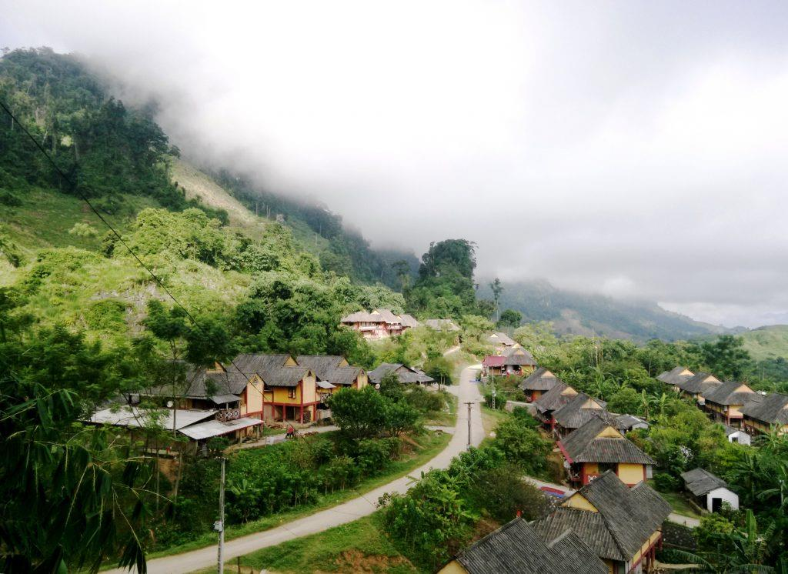
Mộc Châu - Sơn La Trước năm 2013, Mộc Châu có 12 dân tộc anh em cùng sinh sống.
Trong đó chiếm đa số là người thái: 33%, người Mông 18%, người kinh 15%, ngoài ra còn có người Khơ Mú, Dao, Tày...
Người Thái có nhiều món ăn đặc sắc, phong phú, hàng năm các lễ hội Hoa Ban, Hết CHá, Cầu mưa được tổ chức vào mùa xuân với mong muốn mùa màng bội thu...
Vào ngày 30/8-2/9 hàng năm huyện tổ chức ngày hội văn hóa cho người H'Mong từ các tỉnh miền núi phía bắc đổ về thị trấn Mộc Châu. Ngày hội là dịp cho các đôi trai gái người H'Mong có cơ hội tìm hiểu về nhau.
Mộc Châu - Sơn La là cao nguyên rộng lớn, có khí hậu ôn đới gió mùa.
Các điểm du lịch nổi tiếng phải kể Hang Dơi, rừng thông Mộc Châu, thác Thái Hưng và không thể thiếu các đồi chè, đồng cỏ ở thị trấn NT Mộc Châu.
Ban Quản lý Du lịch Quốc gia Mộc Châu của huyện đang triển khai hoàn thành các khu du lịch sinh thái ở thị trấn Mộc châu và NT Mộc Châu.
Hiện nay đã có một số khu đã triển khai: khu hồ sinh thái và rừng thông bản Áng,...
Mộc Châu - Sơn La tính đến thời điểm hiện nay cũng được xem là một trong nhũng khu du lịch có nhiều núi cao nguyên hùng vĩ - với nhiều lối sống mang đậm sắc dân tộc của Việt Nam ta - khí hậu mát mẻ rất thích hợp cho nhiều khách du lịch muốn tham quan và chiêm ngưỡng
Đồ Sơn là một bán đảo nhỏ do dãy núi Rồng vươn dài ra biển 5 km với hàng chục mỏm đồi cao từ 25 đến 130 m.
Quận nằm ở phía đông nam thành phố Hải Phòng, cách trung tâm thành phố khoảng 22 km về hướng đông nam
Đồ Sơn có một khu nghỉ mát gồm nhiều bãi biển có phong cảnh đẹp ở miền bắc Việt Nam.
Do ở phía bắc và phía nam của quận là hai cửa sông Lạch Tray và Văn Úc thuộc hệ thống sông Thái Bình đổ ra biển đem theo nhiều phù sa, cộng thêm việc quai đê lấn biển ở Đảo Hòn Dấu để xây dựng khu Resort cao cấp, nên nước biển ở khu vực này đục (nhất là khu II) nhưng vẫn có sức thu hút du khách.
Đồ Sơn rất đông du khách từ khắp mọi miền Việt Nam cũng như khách quốc tế về đây tắm biển, nghỉ ngơi và leo núi, cắm trại, ngắm nhìn phong cảnh biển đẹp buổi chiều tà.
Ngoài ra,khu du lịch Đồ Sơn còn vinh dự là nơi có hòn đảo nhân tạo đầu tiên của Việt Nam - đảo Hoa Phượng, toạ lạc tại trung tâm khu du lịch, được trang bị đầy đủ các tiện nghi hiện đại cực kỳ sang trọng như trung tâm thương mại cao cấp ở giữa đảo, bể bơi nhân tạo, phố ăn uống, khách sạn đẳng cấp 5 sao, khu biệt thự, bến du thuyền,...
Những nơi nổi tiếng như : Hải đăng Hòn Dấu,...
là nơi lý tưởng để khách du lịch đến dừng chân và nghỉ dưỡng
Đồ Sơn - Hải Phòng được xem là khu nghỉ mát lớn nhất miền Bắc với một bãi biển đẹp đẽ - khiến cho không ít khách du lịch muốn lui tới . Được xem là một khu nghỉ dưỡng cao cấp tại Miền Bắc của nước ta.
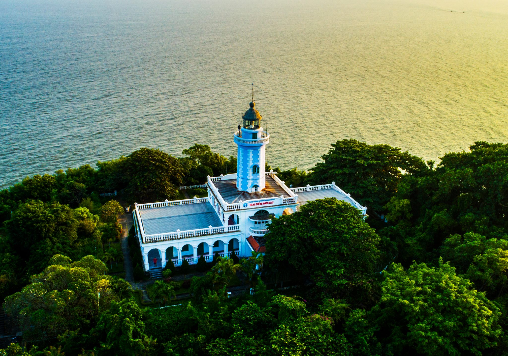
Hải Đăng Hòn Dấu
8.Vân Đồn Quảng Ninh - Vẻ đẹp thiên nhiên hùng vĩ
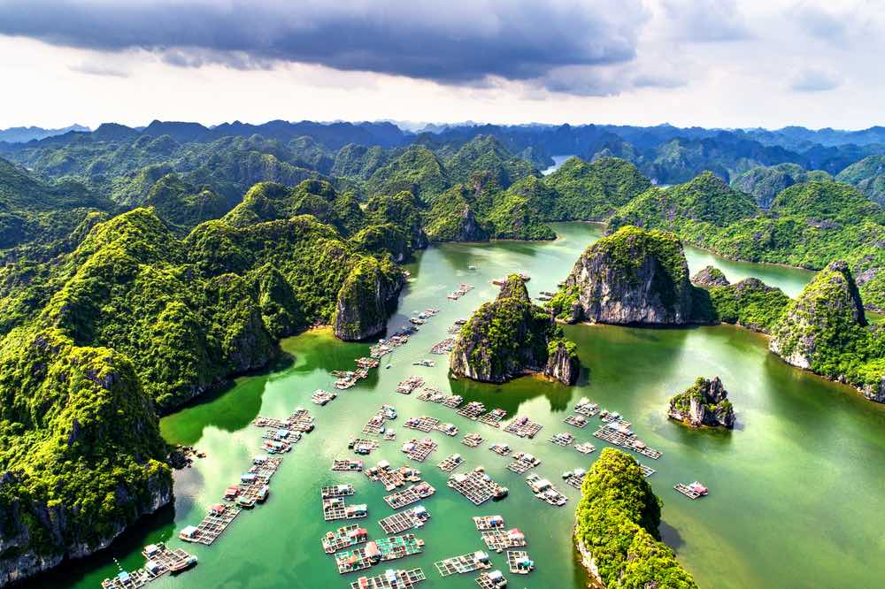
Vân Đồn - Quảng Ninh là một huyện đảo thuộc tỉnh Quảng Ninh, Việt Nam.
Huyện Vân Đồn nằm ở phía đông tỉnh Quảng Ninh, là một vùng biển nằm trong vịnh Bắc Bộ với 600 hòn đảo lớn nhỏ thuộc hai quần đảo Cái Bầu (tên cũ là Kế Bào) và Vân Hải.
Do địa hình là quần đảo chủ yếu là các đảo nhỏ, lại là núi đá vôi, nên trong toàn bộ diện tích tự nhiên của huyện, diện tích đất liền không lớn, chủ yếu là diện tích mặt biển.
Huyện đảo Vân Đồn có 68% diện tích đất tự nhiên trên các đảo là rừng và đất rừng.
Trên các đảo không có sông ngòi lớn mà chỉ có vài con suối trên những đảo lớn.
Người dân địa phương thường gọi các eo biển giữa các đảo với nhau và với đất liền là sông như: sông Voi Lớn nằm giữa đảo Cái Bầu với đất liền, sông Mang ở đảo Quan Lạn.
Trên địa bàn huyện có hai hồ nhỏ là hồ Voòng Tre và hồ Mắt Rồng.
Con người đã có mặt trên các đảo của huyện Vân Đồn từ rất sớm. Di chỉ khảo cổ ở đây có mật độ đậm đặc. Hang Soi Nhụ là một di chỉ thuộc trung kỳ đồ đá mới, trước cả văn hóa Hạ Long.
Huyện đảo Vân Đồn, nằm ôm trọn vùng vịnh Bái Tử Long, có nhiều đảo đá vôi và những hang động đẹp, lại nối liền với vịnh Hạ Long, di sản thế giới.
Những địa điểm nổi tiếng như : Đảo Quan Lạn,...
Các xã đảo tuyến ngoài giáp vịnh Hạ Long (tuyến đảo Vân Hải) có nhiều bãi tắm đẹp, nhiều hải sản ngon, khí hậu trong lành và những di tích lịch sử văn hóa, có nhiều tiềm năng để phát triển kinh tế dịch vụ du lịch.
Huyện Vân Đồn - Quảng Ninh là địa điểm du lịch lớn tại Quảng Ninh nằm ở phía Bắc nước ta - chính vì sự ít người dân biết tới nơi đây khiến nó cũng ít trở nên nổi tiếng nhưng đây cũng là một địa điểm đẹp và lí tưởng cho những ai chưa từng đi qua.
Đảo Quan Lạn
9.Đồng Văn Hà Giang - Cao nguyên đá hoang sơ tuyệt đẹp
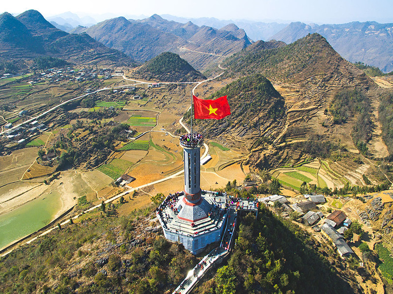
Đồng Văn - Hà Giang à một huyện miền núi thuộc tỉnh Hà Giang, đồng thời là huyện cực bắc của Việt Nam.
Đồng Văn là huyện vùng cao biên giới của tỉnh Hà Giang, cách thành phố Hà Giang 150 km về phía bắc, là huyện cực bắc của Việt Nam (điểm cực bắc tại núi Rồng, xã Lũng Cú).
Huyện lỵ trước đây của huyện Đồng Văn đặt tại thị trấn Phố Bảng, sau chuyển về khu phố cổ thuộc xã Đồng Văn, nay là thị trấn Đồng Văn.
Nguồn nước mặt trên địa bàn huyện rất khan hiếm, chỉ có các suối nhỏ chảy vào mùa mưa và một số hồ ao khác.
Về địa danh Đồng Văn, địa danh Đồng Văn được xuất hiện lần đầu tiên tại Nghị định 60 ngày 17/6/1904, do Tướng chỉ huy tối cao quân đội Đông Dương ban hành, lập khu vực Đồng Văn, Lũng Cú và Má Lủng Kha thành công xã, gọi chung là Đồng Văn.
Đồng Văn là một trong những huyện nổi tiếng về du lịch của tỉnh Hà Giang như : Đỉnh mây luồn Sà Phìn - Phó Bảng,...
QL 4C từ huyện kết nối với trung tâm Thành phố Hà Giang và các huyện vùng cao nguyên núi đá Đồng Văn. Là huyện có nhiều điểm du lịch, có nhiều tiềm năng khai thác để thúc đẩy kinh tế thương mại - du lịch.
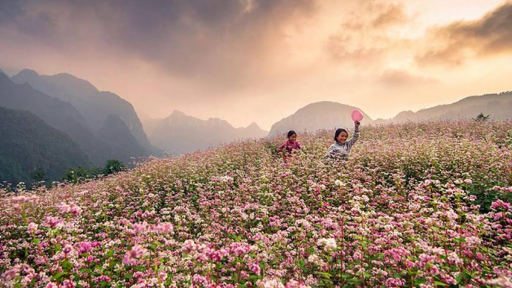
Đỉnh Mây Luồn Sà Phìn - Phó Bảng
10.Chùa Tam Chúc - Nét đẹp cổ kính giữa chốn non nước
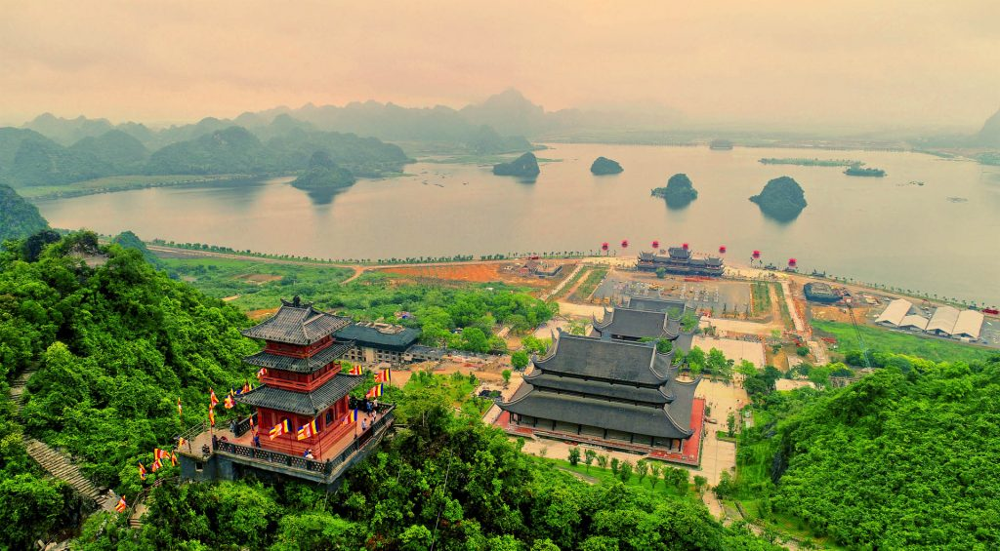
Chùa Tam Chúc là một khu du lịch quốc gia ở Việt Nam, ở đây có chùa Tam Chúc là chùa được nhiều báo chí Việt Nam coi là chùa lớn nhất thế giới.
Toàn khu vực rộng 5.100 ha, bao gồm hệ thống các công trình văn hóa thể thao được xây dựng mới gắn với hồ Tam Chúc nằm ở thị trấn Ba Sao và xã Khả Phong, huyện Kim Bảng, tỉnh Hà Nam.
Khu du lịch hồ Tam Chúc có vị trí đặc biệt là gạch nối giữa Khu du lịch Chùa Hương với khu bảo tồn thiên nhiên Vân Long, chùa Bái Đính, Tràng An, Tam Cốc tạo thành một quần thể các khu du lịch sinh thái vùng ngập nước.
Khu du lịch sẽ phát triển 6 khu chức năng gồm khu trung tâm đón tiếp, khu văn hóa tâm linh Tam Chúc, khu bảo tồn tự nhiên Quèn Vồng và hồ Tam Chúc, khu nghỉ dưỡng chăm sóc sức khỏe và du lịch cộng đồng Tam Chúc, khu sân golf Kim Bảng và hồ Ba Hang và trung tâm dịch vụ hậu cần phục vụ hoạt động khu du lịch tại Thị trấn Ba Sao.
Chùa Tam Chúc mới hiện nay được xây dựng với các hạng mục cổng Tam Quan, Vườn cột kinh, điện Quan Âm, điện Pháp Chủ, điện Tam Thế và Tháp Ngọc.
Chùa nằm ở phía Tây và nhìn ra hồ Tam Chúc.
Chùa Tam Chúc là một khu du lịch nổi tiếng và là ngôi chùa lớn nhất tại Việt Nam - nghe sơ qua đã thấy cũng không ít người lui tới cầu nguyện hay tham quan vẻ đẹp tại nơi đây - mang nhiều vẻ đẹp của nét dân tộc Việt Nam ta .